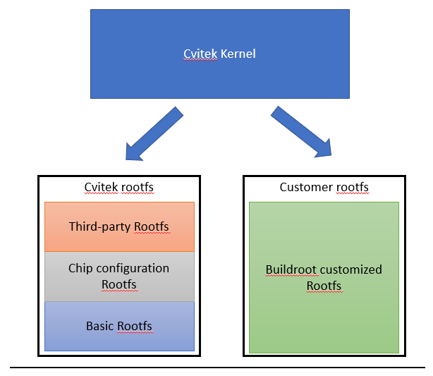
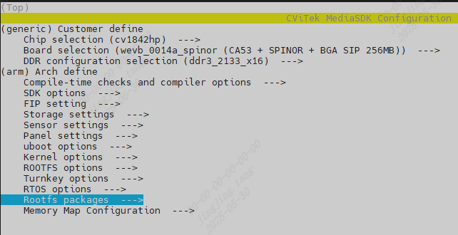
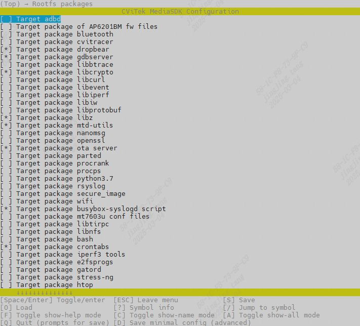
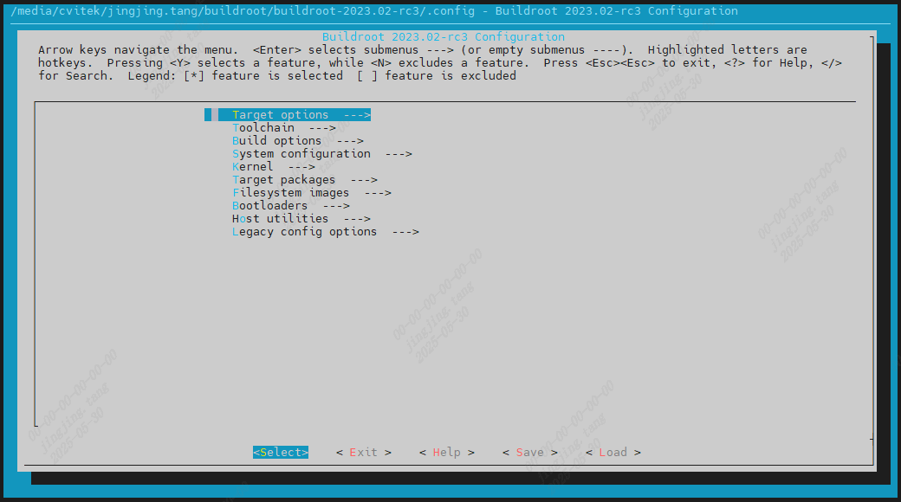
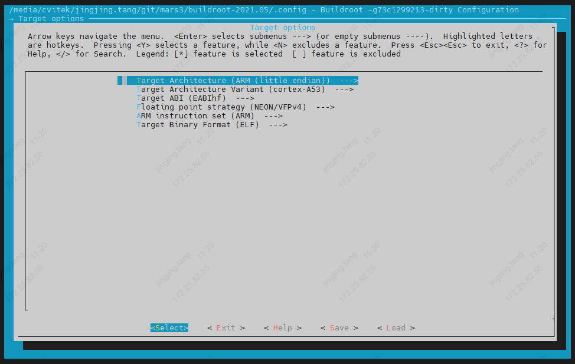
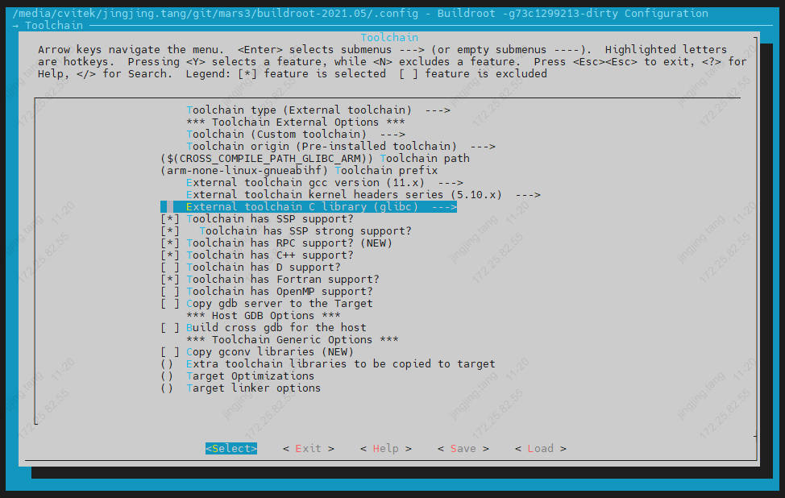
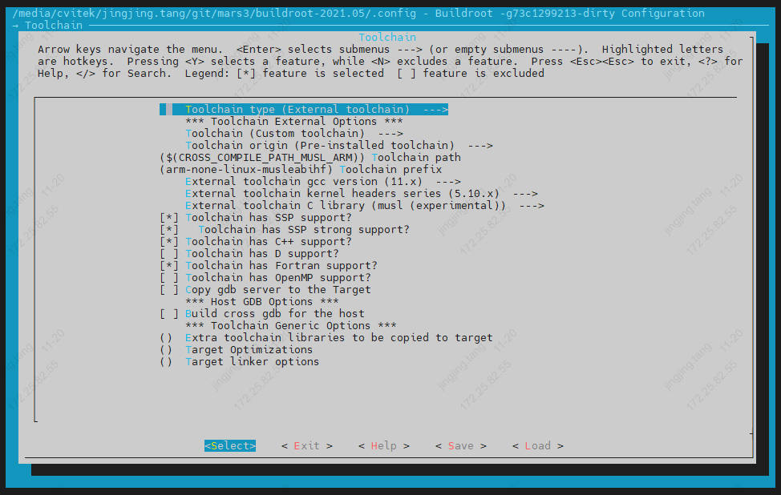
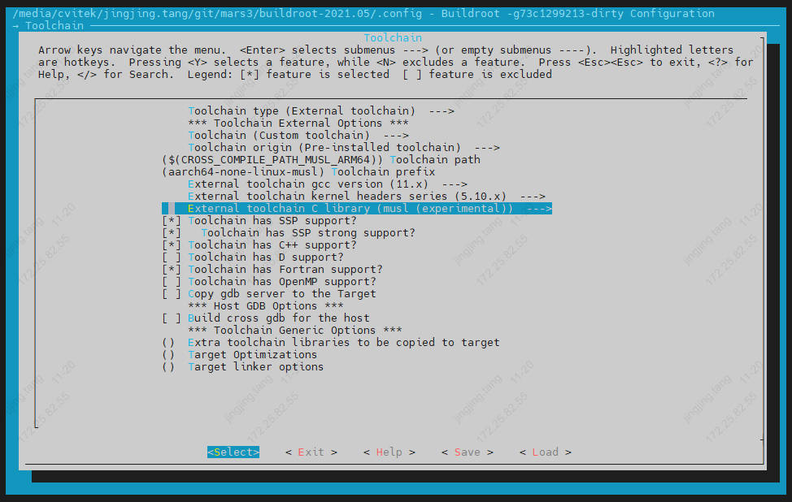
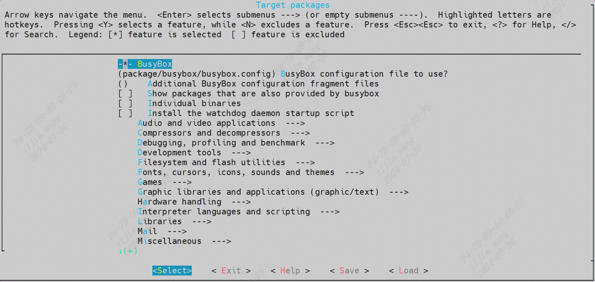

5. 根文件系统(rootfs)¶
5.1. 根文件系统简介¶
内核是Linux操作系统的核心，文件系统是用户和操作系统沟通的主要工具。所以要使用Linux时，要先了解文件系统原理。
根文件系统结构是以 ”/” 为 “根(root)”起始的树状目录结构，当内核程序映像(uImage)启动会挂载一个设备(ex:eMMC)在根目录上，根文件系统通常存放在内部存储器(DRAM)或非挥发内存(FLASH)中，或是透过网络存取的文件系统(NFS)。所有应用程序和函式库都会按照分类放入文件系统中，以下列出根文件系统目录结构图。
/ 根目录
├── bin ## 可执行文件
├── dev ## 设备文件
├── etc ## 系统配置文件(ex: 启动文件)
├── home ## 用户目录
├── init ## 开机执行script
├── kdump ## 内核除错目录
├── lib ## 函式库包含glibc, shared library和内核模块
├── mnt ## 临时文件系统的挂载点
├── proc ## 内核和行程信息的虚拟文件系统
├── sbin ## 系统管理的可执行文件
├── sys ## 系统设备和文件层次结构，提供内核数据数据
├── usr ## 此目录下包含用户自定义应用程序和文文件
└── var ## 存放系统日志和服务程序文件
5.2. Rootfs¶
本章节是描述文件系统之组成方式，详细路径于ramdisk/rootfs/
5.2.1. Pre-build rootfs 架构¶
文件系统之结构目录主要拆了三个类型，且逐层迭加于Rootfs，将于下方分别描述:
Basic rootfs:
现阶段本公司提供了基于以下三种Arch产生之pre-build rootfs档案
Arch |
Libc |
Pre-build ramdisk path |
|---|---|---|
Arm |
glibc |
ramdisk/rootfs/common_arm/ |
Arm |
musl |
ramdisk/rootfs/common_musl_arm/ |
Aarch64 |
glibc |
ramdisk/rootfs/common_arm64/ |
Chip configuration rootfs:
本公司将所有Processorset相依之开机设置均放置于ramdisk/rootfs/overlay/$CHIP
Third-party rootfs:
本公司将所有第三方软件编译出来之library、utility、related file均放置于
ramdisk/rootfs/public/
{kind=link}

可以使用menuconfig命令通过图形化菜单的方式决定需要那些Third-party software要放置进Rootfs


5.2.2. 编译来自buildroot 的rootfs¶
此章节是示范如何从buildroot产生rootfs并且于EVB上面运行的例子，若采用上一章节描述的pre-build rootfs，可忽略此章节。
从CV184x v6.2.0版本开始，可以基于CV184x的编译环境，使用Buildroot 编译rootfs。
拉取buildroot仓库，与CV184x build目录同级，并切换到buildroot-2023.11分支
https://github.com/sophgo/buildroot-2021.05.git
5.2.2.1. 编译¶
$ source build/envsetup_soc.sh # 初始化环境
$ defconfig cv1842hp_wevb_0014a_spinor # 设定编译组态，cv184x内建支持的EVB板卡配置命名方式为 $CHIP_$BOARD
$ setconfig BUILDROOT_FS=y # 设定使用Buildroot 编译rootfs
$ cp buildroot-2021.05/configs/cvitek_CV184X_musl_arm_defconfig buildroot-2021.05/.config # 设定Buildroot编译配置项
$ clean_all && build_all # 全编译
$ clean_rootfs && pack_rootfs # 仅更新rootfs
5.2.2.2. 图形化菜单界面配置Buildroot¶
$ menuconfig_buildroot
menuconfig_buildroot 修改的是当前 .config，要用 savedefconfig_buildroot 保存回 buildroot-2021.05/configs/cvitek_CV184X_musl_arm_defconfig，否则后续重新生成配置时会丢失。
{kind=link}

5.2.2.3. 设置 Arch Info & Toolchain & Packages¶
configs 目录下有 CV184x 的默认配置文件 cvitek_CV184X_musl_arm_defconfig。
初始化编译环境和选定 EVB 后，可以通过 menuconfig_buildroot 命令快速配置。
设置架构
ARM
{kind=link}

AARCH64

设置工具链
GLIBC AARCH64
{kind=link}
GLIBC ARM
{kind=link}

MUSL ARM
{kind=link}

MUSL AARCH64
{kind=link}

设置需要安装的软件包
{kind=link}

5.2.2.4. 打包 /etc/init.d/Sxx 与 ko 自动加载¶
Buildroot 模式下，SDK 会在 br-rootfs-prepare 阶段准备 overlay 内容，主要包含：
将
ramdisk/rootfs/overlay/${CHIP_ARCH_L}_${SDK_VER}/etc/init.d下的启动脚本复制到buildroot-2021.05/board/cvitek/CV184X/overlay/etc/init.d。将
${OUTPUT_DIR}/rootfs/system复制到 Buildroot overlay 的/system。从
osdrv/interdrv补充*.ko到overlay/system/ko，避免 Buildroot rootfs 缺少媒体驱动模块。
如果板端已经存在 /system/ko/loadsystemko.sh 和 /system/ko/*.ko，但 ko 没有自动 insmod，优先检查 /etc/init.d/S99user 是否被打包进 rootfs，并确认脚本内会调用 loadsystemko.sh。
$ ls buildroot-2021.05/board/cvitek/CV184X/overlay/etc/init.d
$ ls buildroot-2021.05/output/target/etc/init.d
板端验证：
# ls -l /etc/init.d/S99user
# sh -x /etc/init.d/S99user start
# ls /system/ko
# sh -x /system/ko/loadsystemko.sh
# lsmod
若 S99user 不存在，系统启动时不会自动执行 loadsystemko.sh，即使 /system/ko 下已有 ko 文件也不会自动加载。
5.2.2.5. BR2_TARGET_GENERIC_REMOUNT_ROOTFS_RW¶
BR2_TARGET_GENERIC_REMOUNT_ROOTFS_RW 用于控制 Buildroot 启动过程中是否将根文件系统 remount 为 rw。配置路径如下：
$ menuconfig_buildroot
System configuration --->
[*] remount root filesystem read-write during boot
$ savedefconfig_buildroot
验证 defconfig：
$ grep BR2_TARGET_GENERIC_REMOUNT_ROOTFS_RW buildroot-2021.05/configs/cvitek_CV184X_musl_arm_defconfig
板端验证：
# cat /proc/cmdline
# mount | grep ' on / '
# mkdir /rootfs_rw_test
若关闭该选项但 rootfs 仍然可写，需要同时检查以下三处：
/proc/cmdline是否仍带有rw。若 bootargs 为rw，kernel 会按可写方式挂载 rootfs。/etc/inittab是否存在mount -o remount,rw /。/etc/init.d是否存在额外的 remount 脚本，例如S01remount_rootfs_rw。
当 /proc/cmdline 为 rootwait ro 且没有 init 脚本再次 remount rw 时，关闭 BR2_TARGET_GENERIC_REMOUNT_ROOTFS_RW 后，rootfs 应保持只读。
5.2.2.6. 产生新的 ROOTFS 可烧录映象档¶
$ pack_rootfs
Buildroot 编译 rootfs 主要参考 build/Makefile 中的 br-rootfs-prepare 和 br-rootfs-pack：
menuconfig-br2:
${Q}$(MAKE) -C ${BUILDROOT_PATH} menuconfig
savedefconfig-br2:
${Q}$(MAKE) -C ${BUILDROOT_PATH} savedefconfig
# BR_OVERLAY_DIR
# BR_ROOTFS_RAWIMAGE
br-rootfs-prepare:export CROSS_COMPILE_KERNEL=$(patsubst "%",%,$(CONFIG_CROSS_COMPILE_KERNEL))
br-rootfs-prepare:export CROSS_COMPILE_SDK=$(patsubst "%",%,$(CONFIG_CROSS_COMPILE_SDK))
br-rootfs-prepare:
$(call print_target)
${Q}mkdir -p $(BR_OVERLAY_DIR)/etc/init.d
${Q}if [ -d $(RAMDISK_PATH)/rootfs/overlay/${CHIP_ARCH_L}_${SDK_VER}/etc/init.d ]; then \
cp -arf $(RAMDISK_PATH)/rootfs/overlay/${CHIP_ARCH_L}_${SDK_VER}/etc/init.d/* $(BR_OVERLAY_DIR)/etc/init.d/; \
fi
${Q}rm -f $(BR_OVERLAY_DIR)/etc/init.d/S01remount_rootfs_rw
${Q}rm -f $(BR_DIR)/output/target/etc/init.d/S01remount_rootfs_rw
# copy ko and mmf libs
$(if $(wildcard $(OUTPUT_DIR)/rootfs/system),,$(error $(OUTPUT_DIR)/rootfs/system not found - run build_osdrv/build_all before pack_rootfs))
${Q}rm -rf $(BR_OVERLAY_DIR)/system
${Q}mkdir -p $(BR_OVERLAY_DIR)/system
${Q}cp -arf $(OUTPUT_DIR)/rootfs/system/. $(BR_OVERLAY_DIR)/system/
${Q}mkdir -p $(BR_OVERLAY_DIR)/system/ko
${Q}find $(OSDRV_PATH)/interdrv -mindepth 2 -maxdepth 2 -type f -name '*.ko' -exec cp -f {} $(BR_OVERLAY_DIR)/system/ko/ \;
# strip
${Q}find $(BR_OVERLAY_DIR) -name "*.ko" -type f -printf 'striping %p\n' -exec $(CROSS_COMPILE_KERNEL)strip --strip-unneeded {} \;
${Q}find $(BR_OVERLAY_DIR) -name "*.so*" -type f -printf 'striping %p\n' -exec $(CROSS_COMPILE_KERNEL)strip --strip-all {} \;
${Q}find $(BR_OVERLAY_DIR) -executable -type f ! -name "*.sh" ! -path "*etc*" ! -path "*.ko" -printf 'striping %p\n' -exec $(CROSS_COMPILE_SDK)strip --strip-all {} 2>/dev/null \;
br-rootfs-pack:export TARGET_OUTPUT_DIR=$(BR_DIR)/output/$(BR_BOARD)
br-rootfs-pack:
$(call print_target)
${Q}if [ ! -f $(BR_DIR)/.config ]; then $(MAKE) -C $(BR_DIR) $(BR_DEFCONFIG); fi
${Q}$(MAKE) -j${NPROC} -C $(BR_DIR)
# copy rootfs to rawimg dir
ifeq (${CONFIG_ROOTFS_RW},y)
ifeq ($(STORAGE_TYPE),spinor)
$(warning spi nor flash is not support rw filesystem)
else ifeq (${STORAGE_TYPE},spinand)
${Q}cp $(BR_DIR)/output/images/rootfs.ubifs $(OUTPUT_DIR)/rawimages/
${Q}python3 $(COMMON_TOOLS_PATH)/spinand_tool/mkubiimg.py --ubionly $(FLASH_PARTITION_XML) ROOTFS $(OUTPUT_DIR)/rawimages/rootfs.ubifs $(OUTPUT_DIR)/rawimages/rootfs.spinand -b $(CONFIG_NANDFLASH_BLOCKSIZE) -p $(CONFIG_NANDFLASH_PAGESIZE)
${Q}rm $(OUTPUT_DIR)/rawimages/rootfs.ubifs
else
${Q}cp $(BR_DIR)/output/images/rootfs.ext4 $(OUTPUT_DIR)/rawimages/rootfs.$(STORAGE_TYPE)
endif
else
ifeq (${STORAGE_TYPE},spinand)
${Q}cp $(BR_DIR)/output/images/rootfs.squashfs $(OUTPUT_DIR)/rawimages/
${Q}python3 $(COMMON_TOOLS_PATH)/spinand_tool/mkubiimg.py --ubionly $(FLASH_PARTITION_XML) ROOTFS $(OUTPUT_DIR)/rawimages/rootfs.squashfs $(OUTPUT_DIR)/rawimages/rootfs.spinand -b $(CONFIG_NANDFLASH_BLOCKSIZE) -p $(CONFIG_NANDFLASH_PAGESIZE)
${Q}rm $(OUTPUT_DIR)/rawimages/rootfs.squashfs
else ifeq (${STORAGE_TYPE},sd)
${Q}cp $(BR_DIR)/output/images/rootfs.ext4 $(OUTPUT_DIR)/rawimages/rootfs.$(STORAGE_TYPE)
else
${Q}cp $(BR_DIR)/output/images/rootfs.squashfs $(OUTPUT_DIR)/rawimages/rootfs.$(STORAGE_TYPE)
endif
endif
ifneq ($(STORAGE_TYPE),sd)
$(call raw2cimg ,rootfs.$(STORAGE_TYPE))
endif
# TODO A/B boot is currently not supported when CONFIG_BUILDROOT_FS is enabled
ifeq ($(CONFIG_BUILDROOT_FS),y)
rootfs:br-rootfs-prepare
rootfs:br-rootfs-pack
else
rootfs:rootfs-pack
rootfs:
$(call print_target)
$(call raw2cimg ,rootfs.$(STORAGE_TYPE))
endif
透过第三章所提的步骤烧录到版端。
5.2.3. 将rootfs 包装成可烧录映像档¶
将前述步骤产生之rootfs folder透过mksquashfs工具做最终打包，压缩方式为XZ，最终产物即是可刻录于Flash上的rootfs.spinor / rootfs.spinand / rootfs.emmc。
详细参考build/Makefile下之rootfs-pack:
rootfs-pack:export CROSS_COMPILE_KERNEL=$(patsubst "%",%,$(CONFIG_CROSS_COMPILE_KERNEL))
rootfs-pack:export CROSS_COMPILE_SDK=$(patsubst "%",%,$(CONFIG_CROSS_COMPILE_SDK))
rootfs-pack:export OSDRV_BUILD_IN:=$(CONFIG_OSDRV_BUILD_IN)
rootfs-pack:$(OUTPUT_DIR)/rawimages
rootfs-pack:rootfs-prepare
rootfs-pack:
$(call print_target)
${Q}printf '\033[1;36;40m Striping rootfs \033[0m\n'
ifeq (${FLASH_SIZE_SHRINK},y)
${Q}printf 'remove unneeded files'
${Q}${BUILD_PATH}/boards/${CHIP_ARCH_L}/${PROJECT_FULLNAME}/rootfs_script/clean_rootfs.sh $(ROOTFS_DIR)
endif
${Q}find $(ROOTFS_DIR) -name "*.ko" -type f -printf 'striping %p\n' -exec $(CROSS_COMPILE_KERNEL)strip --strip-unneeded {} \;
${Q}find $(ROOTFS_DIR) -name "*.so*" -type f -printf 'striping %p\n' -exec $(CROSS_COMPILE_SDK)strip --strip-all {} \;
${Q}find $(ROOTFS_DIR) -executable -type f ! -name "*.sh" ! -path "*etc*" ! -path "*.ko" -printf 'striping %p\n' -exec $(CROSS_COMPILE_SDK)strip --strip-all {} 2>/dev/null \;
ifeq (${CONFIG_ROOTFS_RW},y)
$(call pack_image,rootfs,$(ROOTFS_DIR),71M)
else
ifeq ($(STORAGE_TYPE),spinor)
ifeq (${CONFIG_ROOTFS_FORMAT_OPTIMIZATION},y)
${Q}mksquashfs $(ROOTFS_DIR) $(OUTPUT_DIR)/rawimages/rootfs.sqsh -root-owned -comp gzip
else
${Q}mksquashfs $(ROOTFS_DIR) $(OUTPUT_DIR)/rawimages/rootfs.sqsh -root-owned -comp xz
endif
else
${Q}mksquashfs $(ROOTFS_DIR) $(OUTPUT_DIR)/rawimages/rootfs.sqsh -root-owned -comp xz -e mnt/cfg/*
endif
ifeq ($(STORAGE_TYPE),spinand)
${Q}python3 $(COMMON_TOOLS_PATH)/spinand_tool/mkubiimg.py --ubionly $(FLASH_PARTITION_XML) ROOTFS $(OUTPUT_DIR)/rawimages/rootfs.sqsh $(OUTPUT_DIR)/rawimages/rootfs.spinand -b $(CONFIG_NANDFLASH_BLOCKSIZE) -p $(CONFIG_NANDFLASH_PAGESIZE)
${Q}rm $(OUTPUT_DIR)/rawimages/rootfs.sqsh
else
${Q}mv $(OUTPUT_DIR)/rawimages/rootfs.sqsh $(OUTPUT_DIR)/rawimages/rootfs.$(STORAGE_TYPE)
endif
endif
5.2.4. Linux kernel 自动加载rootfs¶
Linux kernel会根据uboot设定之bootargs内的root=变量决定rootfs位于哪个device
'root=...'
This argument tells the kernel what device is to be used
as the root filesystem while booting. The default of this
setting is determined at compile time, and usually is the
value of the root device of the system that the kernel was
built on. To override this value, and select the second
floppy drive as the root device, one would use
'root=/dev/fd1'.
The root device can be specified symbolically or
numerically. A symbolic specification has the form
/dev/XXYN, where XX designates the device type (e.g., 'hd'
for ST-506 compatible hard disk, with Y in 'a'–'d'; 'sd'
for SCSI compatible disk, with Y in 'a'–'e'), Y the driver
letter or number, and N the number (in decimal) of the
partition on this device.
Note that this has nothing to do with the designation of
these devices on your filesystem. The '/dev/' part is
purely conventional.
The more awkward and less portable numeric specification
of the above possible root devices in major/minor format
is also accepted. (For example, /dev/sda3 is major 8,
minor 3, so you could use 'root=0x803' as an alternative.)